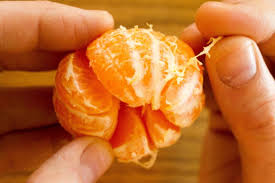
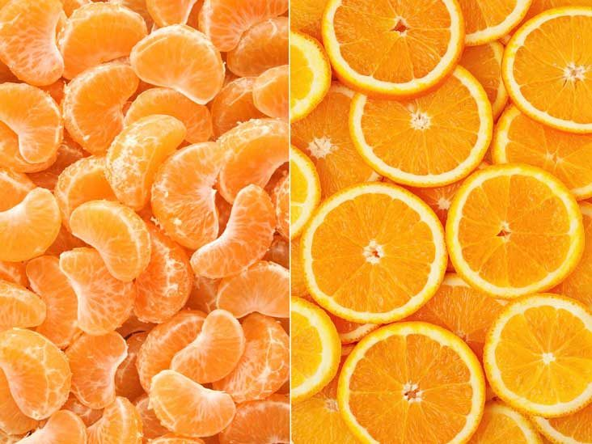

Oranges came from what is now southeast China!
That is called the pith, it is a spongy white substnace that can be sour or bitter but it has just as much vitamin C as the orange itself!
Oranges have a lot of vitamin C in them, as well as a bunch of other vitamins, antioxidants, and minerals. They also may reduce your chance of kidney stones and heart disease.
